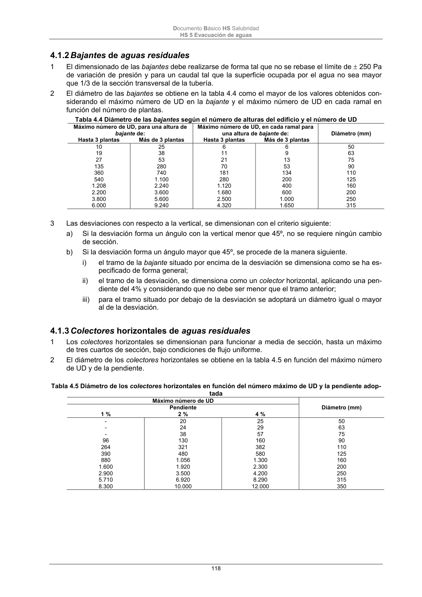

DB-HS · Página 118 · versión 2022-06-14
SHA256: 68df3caacc95f71aee2ec1ba7b2c65ae66155c21e3a8785521b8fdd4fd640d3b · página física 118 de 184 · métodos de encabezado
solo si están cotejados.
Documento · ← p. 117 · p. 119 →
Formatos: Markdown · JSON de bloques · PDF p. 118 · imagen PNG
Documento Básico HS Salubridad HS 5 Evacuación de aguas 118 4.1.2 Bajantes de aguas residuales 1 El dimensionado de las bajantes debe realizarse de forma tal que no se rebase el límite de 250 Pa de variación de presión y para un caudal tal que la superficie ocupada por el agua no sea mayor que 1/3 de la sección transversal de la tubería. 2 El diámetro de las bajantes se obtiene en la tabla 4.4 como el mayor de los valores obtenidos con- siderando el máximo número de UD en la bajante y el máximo número de UD en cada ramal en función del número de plantas. Tabla 4.4 Diámetro de las bajantes según el número de alturas del edificio y el número de UD Máximo número de UD, para una altura de bajante de: Máximo número de UD, en cada ramal para una altura de bajante de: Diámetro (mm) Hasta 3 plantas Más de 3 plantas Hasta 3 plantas Más de 3 plantas 10 25 6 6 50 19 38 11 9 63 27 53 21 13 75 135 280 70 53 90 360 740 181 134 110 540 1.100 280 200 125 1.208 2.240 1.120 400 160 2.200 3.600 1.680 600 200 3.800 5.600 2.500 1.000 250 6.000 9.240 4.320 1.650 315 3 Las desviaciones con respecto a la vertical, se dimensionan con el criterio siguiente: a) Si la desviación forma un ángulo con la vertical menor que 45º, no se requiere ningún cambio de sección. b) Si la desviación forma un ángulo mayor que 45º, se procede de la manera siguiente. i) el tramo de la bajante situado por encima de la desviación se dimensiona como se ha es- pecificado de forma general; ii) el tramo de la desviación, se dimensiona como un colector horizontal, aplicando una pen- diente del 4% y considerando que no debe ser menor que el tramo anterior; iii) para el tramo situado por debajo de la desviación se adoptará un diámetro igual o mayor al de la desviación. 4.1.3 Colectores horizontales de aguas residuales 1 Los colectores horizontales se dimensionan para funcionar a media de sección, hasta un máximo de tres cuartos de sección, bajo condiciones de flujo uniforme. 2 El diámetro de los colectores horizontales se obtiene en la tabla 4.5 en función del máximo número de UD y de la pendiente. Tabla 4.5 Diámetro de los colectores horizontales en función del número máximo de UD y la pendiente adop- tada Máximo número de UD Diámetro (mm) Pendiente 1 % 2 % 4 % - 20 25 50 - 24 29 63 - 38 57 75 96 130 160 90 264 321 382 110 390 480 580 125 880 1.056 1.300 160 1.600 1.920 2.300 200 2.900 3.500 4.200 250 5.710 6.920 8.290 315 8.300 10.000 12.000 350
